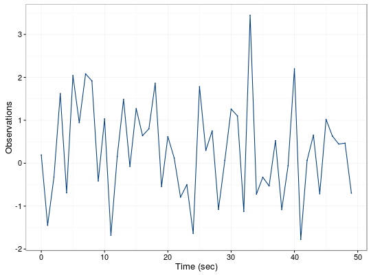
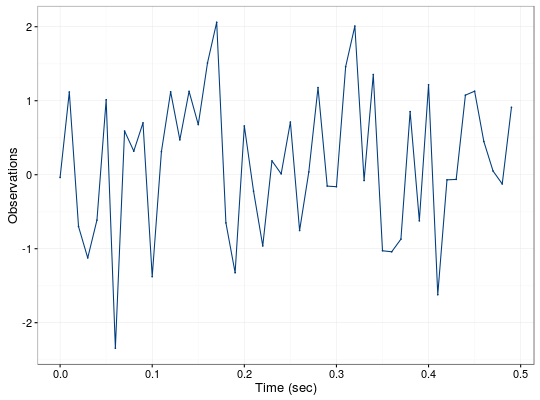

gts(data, start = 0, end = NULL, freq = 1, unit = NULL, name = NULL)
matrix, data.frame, or a numeric vector.numeric that provides the time of the first observation.numeric that provides the time of the last observation.numeric that provides the rate of samples. Default value is 1.string that contains the unit expression of the frequency. Default value is NULL.string that provides an identifier to the data. Default value is NULL.gts object with the following attributes:
Setups a time series oriented object that works well with graphing and summary utilities
example 1: 0.192491906485068 2: -1.44670180633351 3: -0.323180534047634 4: 1.62229611652493 5: -0.689024123596357 6: 2.04212222261495 7: 0.94377911190294 8: 2.0819268787991 9: 1.91711727878331 10: -0.414812239592928 --- 41: 2.19868418440574 42: -1.77390932861561 43: 0.0650322264968479 44: 0.654970382227184 45: -0.712869108984741 46: 1.02056753963664 47: 0.631614719104035 48: 0.447433352715578 49: 0.46653706410743 50: -0.698260607801304
